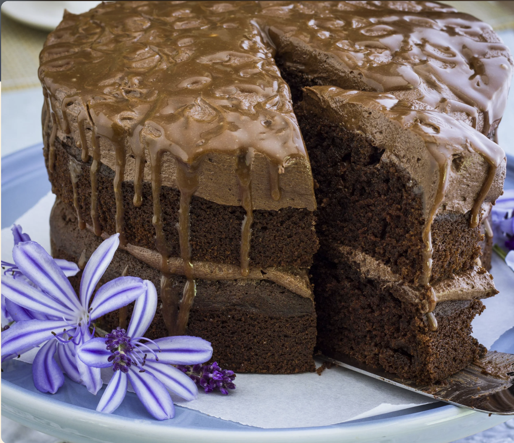

Home
Bar-One Chocolate Cake

Description:
Bake this cake in 2 x 18 cm pans for a high glamorous looking cake.
Cake ingredients:
- 3 extra large eggs at room temperature
- 1 cup (250 ml) canola oil
- 2 t (10 ml) coffee granules to make 1 cup (250 ml) hot black coffee
- 650 g chocolate cake mix
- 2 x 55 g Bar-One chocolates, cut into slivers
Icing ingredients:
- 1 x 250 g chocolate icing mix
- 125 g butter at room temperature
Bar-One glaze ingredients:
- ¼ cup (60 ml) fresh cream
- 55 g Bar-One, cut into slivers
Cake steps:
- Adjust the oven rack to the middle position and preheat the oven to 180 °C. Butter two 18 cm cake pans and line the bases with baking paper.
- Mix cake according to package instructions.
- Stir in the two Bar-One's, cut into slivers.
- Divide mixture evenly between 2 cake pans. Bake for 35 minutes.
- Leave the cakes to cool in the pans for 10 minutes. Turn out onto a cooling rack and leave until cold.
Bar-One glaze steps:
Warm the cream to just below boiling point. Add Bar-One slivers, remove from heat and stir until dissolved. Be patient, as it takes a while to melt. Leave to cool.
Icing Steps:
Mix icing according to package instructions. Ice one layer of the cake and drizzle over about one third of the Bar-One glaze. Place the second cake on top. Ice top layer with remaining icing and drizzle with remaining Bar-One glaze. Feather with the point of a sosatie stick.